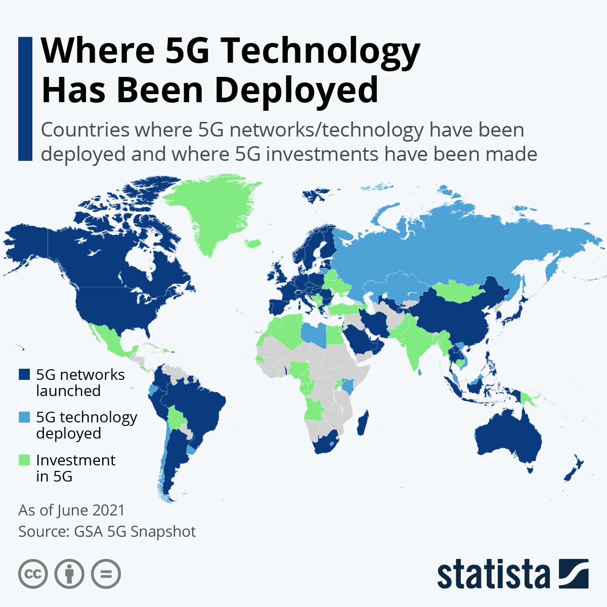

Aspect Politique
petit rappel:
La mise en place de la 5g pourrait laisser place à de multiples développements et progrès dans le monde moderne tel que «l’industrie 4.0»favorisant la robotique ou encore dans les loisirs essentiellement liés aux multimédias. La 5g représente donc un atout majeur dans le développement technologique mondial et laisse ainsi place à des enjeux politiques de même échelle. En effet, la Chine se situe actuellement en tête du marché mondial grâce à ses fournisseurs Huawei et ZTE qui parviennent à s’imposer via des stratégies mêlant agressivité commerciale et nouveauté technologique.
La situation à l'heure actuelle
 Or, de nos jours, un conflit de grande ampleur s’initie entre les États-Unis et la chine ayant pour enjeux la première place mondiale dans le développement de la 5g. à la suite d’une campagne mondiale allant contre les produits Huawei, c’est au tout de l’Australie qui ferme ses portes à ces produits. Toutefois, même si les États-Unis désapprouvent entièrement les produits Huawei, ce n’est pas le cas de tous dont l’Europe en particulier qui déclare de ne pas vouloir clorent les relations avec ce groupe en raison d’une expertise de ses produits s’étant avérée plutôt concluante. Cette déclaration provoqua inexorablement une discorde entre l’Europe et les États-Unis qui fut traduis par un «désaccord politique» entre ces derniers et l’Angleterre. Malgré cela, les États-Unis n’en démordent pas et persévèrent à conserver leurs partisans susceptible de basculer dans l’industrie Chinoise
Les causes de la méfiance contre la Chine
D’abord, de part le fait de l’absence de sécurité dans leurs produits clairement mis en évidence. Ensuite Huawei et ZTE ont transmis l’ensemble de leur donnés sur un serveur dédié à cet effet contrôlé par le uniquement par le parti communiste chinois. Puis, ces dernières bénéficient également d’une aide publique massive perçu par les autres entreprises comme déloyale. Enfin, la 5g par rapport à la 4g menace la stabilité de l’ensemble du réseau due au pouvoir de réseau qu’elle nécessite rendant par conséquent justifiée l’inquiétude émise vis-à-vis du premier développeur de la 5g. Cette situation pourrait potentiellement s’avérer favorable envers l’Europe qui pourrait tirer partit du conflit pour agir sur le plan stratégique global si bien sur ils s’en donnent les moyens.
Bilan
La mise en circulation de la 5g souligne énormément d’incertitude sur de multiples point de vue. L’enjeu qu’elle représente provoque de maintes conflits à l’échelle internationale entre les pays qui se disputent le titre de premier. La 5g représentant un atout majeur dans le développement du monde actuel, la mainmise sur cette découverte entraînerait inéluctablement une élévation significative de la puissance du pays en question. Cette dernière se doit donc d’être suffisamment adaptée et maniée avec précaution afin d’en minimiser les risques et d’en optimiser les résultats.